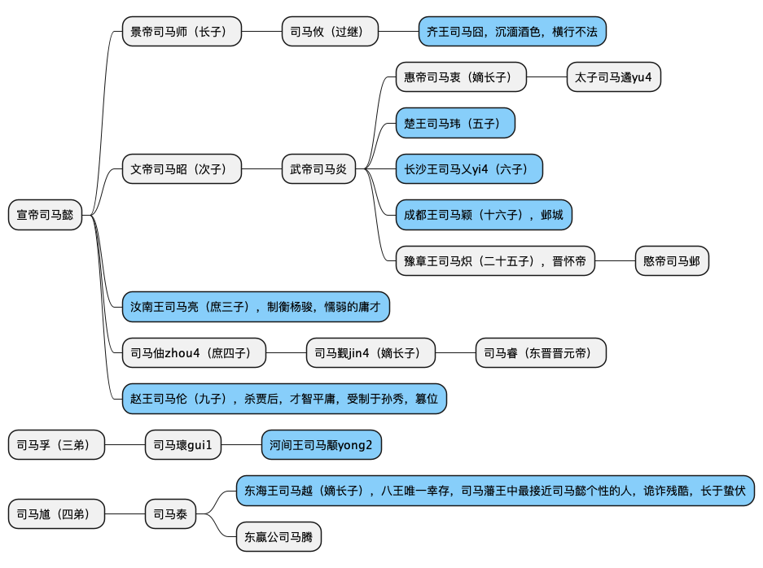

《两晋：风流总被雨打风吹去》
Table of Contents
晋朝皇帝
西晋：
司马懿 -> 司马昭 -> 司马炎（晋武帝）-> 司马衷（惠帝）-> 司马炽（怀帝）-> 司马邺（愍帝）->
↕
司马师（哥哥）
东晋：
司马睿 -> 司马绍 -> 司马衍 -> 司马岳 -> 司马聃 -> 司马丕 -> 司马奕 -> 司马昱 -> 司马曜 -> 司马德宗 -> 司马德文
八王之乱
主要成员

王室外主要成员：
- 杨芷：杨太后（婉嫕yi4有妇德，美映椒房）
- 贾南风：惠帝皇后（短形青黑色，眉后有疵），杀杨太后之母
- 杨骏：杨太后之父
- 孙秀：司马伦的亲信
- 张方：河间王司马颙部将
- 王浚：东海王司马越一党，平北将军，都督幽州诸军事
太子司马遹
皇宫失火，“人君不宜暴露在光亮之中”。
事件一：贾后杀杨骏
武帝司马炎 安排 汝南王司马亮 和 杨太后之父杨骏 一同辅政。
杨骏赶走司马亮。
杨骏擅权，贾后联络 楚王司马玮 轻而易举杀了杨骏。
贾后废 杨太后 ，征召司马亮入朝，与 卫瓘 一同辅政。
事件二：楚王玮杀汝南王亮，贾后杀楚王玮
老迈颟顸的 司马亮 与少壮派的 楚王司马玮 关系紧张。
司马玮诬陷司马亮、卫瓘，贾后指示司马玮杀之，后杀司马玮。
事件三：赵王伦杀贾后
赵王司马伦 亲信 孙秀 煽风点火，贾后废 太子司马遹 。
赵王伦 与 齐王司马囧 废贾后，逼其自尽。
事件四：齐王囧杀赵王伦
赵王伦篡位，幽禁惠帝。
齐王囧、 河间王司马颙 、 成都王司马颖 讨伐赵王伦（全国性战争），孙秀被杀，赵王伦被诛。
齐王囧进京，成都王回到邺城广收名誉。
事件五：长沙王乂杀齐王囧
司马囧横行不法，校尉李含诈称诏书让 河间王司马颙 讨伐司马囧。
司马颙传檄 长沙王司马乂 ，司马囧攻打司马乂反被杀。
事件六：河间王颙杀长沙王乂
成都王颖认为长沙王乂是障碍，于是成都王颖与河间王颙的部将张方杀向洛阳。
长沙王乂被杀，司马颖没有留在京城，返回邺城。
事件七：东海王越杀河间王颙
河间王颙拥护司马颖玮皇太弟，在邺城遥控朝政。后掳惠帝到邺城。
平北将军王浚起兵讨伐司马颖，司马颖战败，拥着惠帝回到洛阳。
司马颙派张方救援司马颖，张方挟持惠帝和司马颖回到长安。
司马颙废掉司马颖的皇太弟身份，改立 豫章王司马炽 为皇太弟。
东海王司马越 起兵讨伐司马颙，迎惠帝还洛阳。司马颖战败后流窜被杀。
司马颙仍据有长安，但已没有实力，不久后诏书征召司马颙进京，途中被杀。
八王之乱中，影响最深远的一场对峙。
这里开始，敌对双方开始借助胡人的力量，这之后，王爷们逐步退出舞台，充当打手的胡人变成了主角。
事件八：东海王越死
惠帝驾崩，怀帝即位。
天下分崩。
司马越出讨石勒，卒于途中。
五胡十六国
创建时间顺序
汉 - 前赵 刘渊 匈奴
刘渊
刘聪
刘曜
后赵 石勒 羯jie2族人
石勒
石弘
石虎
冉闵
前燕 慕容廆gui1
慕容廆
慕容皝huang4
慕容俊